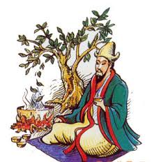

„Gdzie jest herbata, tam jest nadzieja.”
„Gdzie jest herbata, tam jest nadzieja.”

Historie herbaciane
Jakoby chiński cesarz Shen Nung przed prawie pięcioma tysięcy lat podróżował po swoim kraju, odwiedzając miasta i wsie. Podczas jednej z wizyt, poprosił o zagotowanie wody, gdyż chciał się napić i odpocząć na łonie natury. Gdy usiadł otoczony zielenią roślin, podmuch wiatru zerwał liść z krzewu rosnącego nieopodal. Cesarz zaciekawiony listkiem wpadającym do jego ciepłej jeszcze wody, odczekał chwilę i spostrzegł, że napar zaczyna delikatnie zmieniać swą barwę. Wypił więc kilka łyków i zachwycił się rośliną, z której ten liść pochodził, gdyż napar smakował wyśmienicie, a dodatkowo – pobudzał.
Inną popularną legendą o herbacie jest ta, mówiąca o Bodhidharmie, który wędrował z Indii do Chin, szerząc po drodze buddyzm Zen. Jego celem było dotarcie do świątyni Shaolin i oddanie się nieprzerwanej medytacji przez dziewięć lat. Po trzech latach bohater legendy przysnął, czym zniweczył swój plan. W złości odciął sobie powieki, a następnie wyrzucił je, rozpoczynając swą medytację od nowa. By nie pogrążyć się we śnie, przez kolejne lata, jadł liście z krzewu, który wyrósł w miejscu w gdzie upadły jego powieki. Tym samym czuł się bardziej pobudzony i dzięki czemu wytrwał w swoim postanowieniu.
Legend związanych z herbatami jest całe mnóstwo.Jedne dotyczą poszczególnych herbat, inne tłumaczą wyjątkowe właściwości, jeszcze inne mówią o niecodziennych technikach zrywania liści przez małpy. W jednej kwestii jednak wszystkie te legendy pozostają zgodne… herbata to wspaniała roślina, której zaparzenie daje królewski wręcz płyn.
Nie można mieć pewności, kiedy dokładnie zaczęto pić herbatę. Wiadomo, że zanim to się stało, liście herbaty były żute jak liście tytoniowe. Napar herbaciany towarzyszy człowiekowi – nie wliczając legend – od ponad dwóch tysięcy lat. Łącznie z nimi, to prawie pięćdziesiąt wieków dziedzictwa. Jej początków upatruje się w rejonie dzisiejszej prowincji Yunnan w Chinach. Przez lata rozwinął się tam kult herbaty, który z biegiem lat przybierał na sile.Ogromny wzrost popularności, herbata osiąga w drugiej połowie pierwszego tysiąclecia Naszej Ery. W VII wieku za sprawą buddyjskich mnichów dociera do Japonii, zaś w VIII wieku, za panowania dynastii Tang – Lu Yu napisał „Świętą księgę herbaty”. Przyczynił się tym samym do jeszcze większego spopularyzowania herbaty w Chinach.
Europejczycy poznali jednak herbatę dopiero w 1610 roku za sprawą holenderskich kupców, którzy używali jej głównie w celach leczniczych – przeciwko malarii. W 1636r. dociera do Francji, dwa lata później do Rosji, a niespełna dwadzieścia lat później do Niemiec. Do Polski herbata trafia w drugiej połowie XVII wieku. Głównym powodem tak wolnego rozprzestrzeniania się tej rośliny po Europie, było nieumiejętne jej podawanie – często niezgodnie z przeznaczeniem. Początkowo herbata była uznawana za lek na różne dolegliwości, dlatego też na polskich ziemiach, 'czaj' nazwano „herbatą” od „herba” – ziele, „thea” – herbaciany, co można tłumaczyć dosłownie jako „ziele herbaciane”.
Krzew herbaciany absorbuje z otoczenia zarówno to co dobre jak i to co złe. Od 30% do 50% substancji zawartych w roślinie można wyodrębnić, przy czym herbaty czarne charakteryzują się mniejszą zawartością tychże składników niż herbaty zielone. Ilość rozpuszczalnych związków chemicznych w roślinie jest także zależna od jej wieku i jakości. Napar sporządzony z młodszych i wyższych jakościowo suchych liści zawiera więcej rozpuszczonych substancji niż ten przygotowany z liści starszych i jakościowo gorszych. Głównymi składnikami chemicznymi herbaty są:
Substancje bioaktywne w herbacie:
Biopierwiastki w herbacie:
Substancje mineralne w herbacie: